Simon Barthelmé (GIPSA-lab, CNRS)
The purpose of this vignette is to illustrate some of the features in imager by doing some basics statistics on natural images.
A basic finding in natural image statistics is that it’s very easy to predict the value of a given pixel if you know the value of its neighbours. To study pixel neighbourhoods in imager you can define stencils: a stencil is just a series of offsets, with respect to a central pixel, giving the coordinates of the neighbours you care about. Here’s a valid stencil:
stencil <- data.frame(dx=c(-1,1),dy=c(0,0))“dx” is short for \(\delta_x\) and denotes the offset in the x direction, and the same goes for “dy”. Our stencil defines two neighbours: the next pixel to the left (dx = -1), and the next pixel to the right (dx = 1).
We can define another valid stencil that adds a neighbour at (+1,+1):
stencil <- data.frame(dx=c(-1,1,1),dy=c(0,0,1))To get absolute coordinates, use center.stencil:
center.stencil(stencil,x=50,y=30)## x y
## 1 49 30
## 2 51 30
## 3 51 31To retrieve pixel values using a stencil, use get.stencil:
im <- as.cimg(function(x,y) x,w=100,h=100) #An artificial image
get.stencil(im,stencil,x=3,y=2) #Stencil values at (3,2)## [1] 2 4 4Now that we’ve defined a stencil and we have a way of retrieving image neighbourhoods, we can use these tools to study how much a pixel correlates with its neighbours. Let’s define a stencil that includes the central pixel (the origin), plus the left-hand and right-hand neighbours:
stencil <- data.frame(dx=c(0,-1,1),dy=c(0,0,0))We open the usual picture of parrots, convert to grayscale, and select 500 random locations in the image:
im <- load.image(system.file('extdata/parrots.png',package='imager'))
im.bw <- grayscale(im)
pos.x <- round(runif(500,2,width(im)-1))
pos.y <- round(runif(500,1,height(im)))
pos <- cbind(pos.x,pos.y)Note that we’ve constrained the positions to be one pixel away from the border (along the x axis), to avoid the issue of selecting non-existent neighbours.
Using plyr we go through the random positions, and retrieve stencil values at each location
val <- alply(pos,1,function(v) get.stencil(im.bw,stencil,x=v[1],y=v[2]))
head(val,3)## $`1`
## [1] 0.3766275 0.3844706 0.3884314
##
## $`2`
## [1] 0.3083922 0.3398039 0.3080392
##
## $`3`
## [1] 0.3556471 0.3521961 0.3512941In each element of the list, the first value corresponds to the value of the central pixel, the second to the left-hand neighbour and the third to the right-hand neighbour. We transform the list to a matrix and plot the value of the neighbours as a function of the value of the central pixel:
mat <- do.call(rbind,val)
plot(mat[,1],mat[,2],xlab="Central value",ylab="Left-hand neighbour's value" )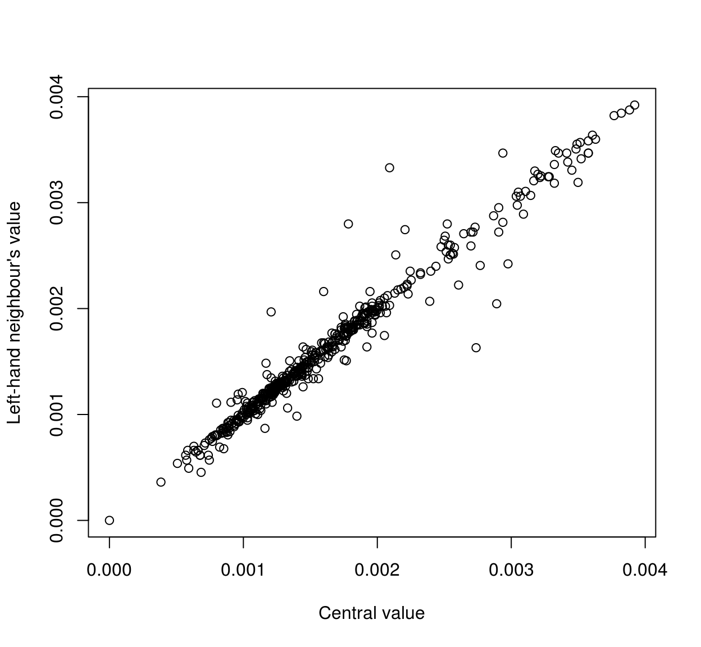
plot(mat[,1],mat[,3],xlab="Central value",ylab="Right-hand neighbour's value" )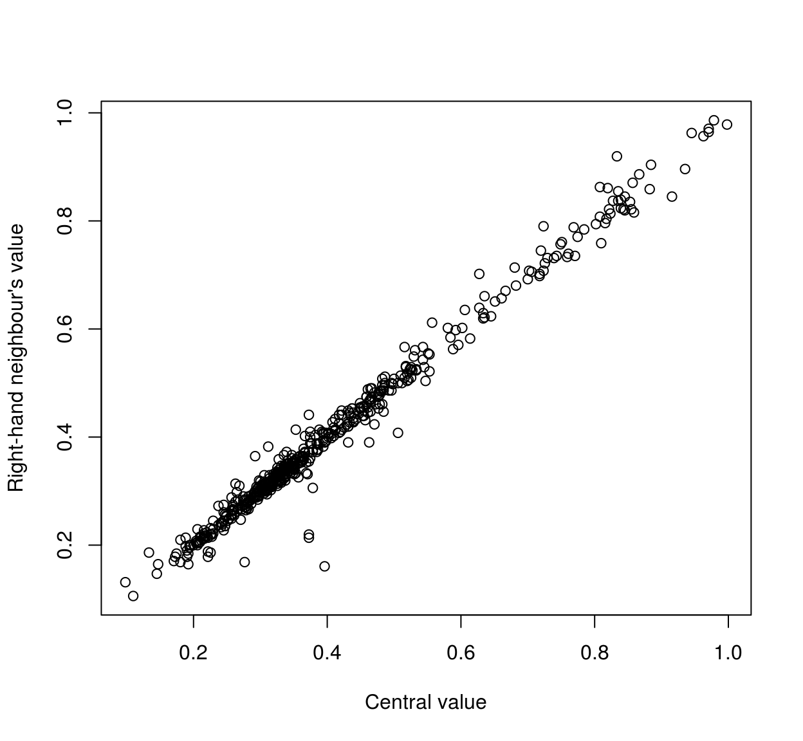
As the scatterplots suggest, neighbouring pixels tend to be highly correlated:
cor(mat)## [,1] [,2] [,3]
## [1,] 1.0000000 0.9874034 0.9866582
## [2,] 0.9874034 1.0000000 0.9607263
## [3,] 0.9866582 0.9607263 1.0000000We can repeat the analysis using neighbours that are further away:
stencil <- data.frame(dx=c(0,-4,4),dy=c(0,0,0)) #Selects neighbours that are 4 pixels away in x direction
pos.x <- round(runif(500,5,width(im)-4))
pos <- cbind(pos.x,pos.y)
mat <- alply(pos,1,function(v) get.stencil(im.bw,stencil,x=v[1],y=v[2])) %>% do.call(rbind,.)
cor(mat)## [,1] [,2] [,3]
## [1,] 1.0000000 0.9378854 0.9177442
## [2,] 0.9378854 1.0000000 0.8570731
## [3,] 0.9177442 0.8570731 1.0000000Here the correlation coefficients (1,2) and (1,3) represent correlations between pixels that are 4 units away (~ 98%), while coefficient (2,3) represents a correlation between pixels that are 8 units away (~ 94%). Correlation then seems to drop as a function of distance. We can make a more systematic analysis using a wider stencil:
stencil <- expand.grid(dx=seq(-10,10,1),dy=seq(-10,10,1))
head(stencil,4)## dx dy
## 1 -10 -10
## 2 -9 -10
## 3 -8 -10
## 4 -7 -10plot(stencil$dx,stencil$dy,pch=19,xlab="dx",ylab="dy",main="Square stencil")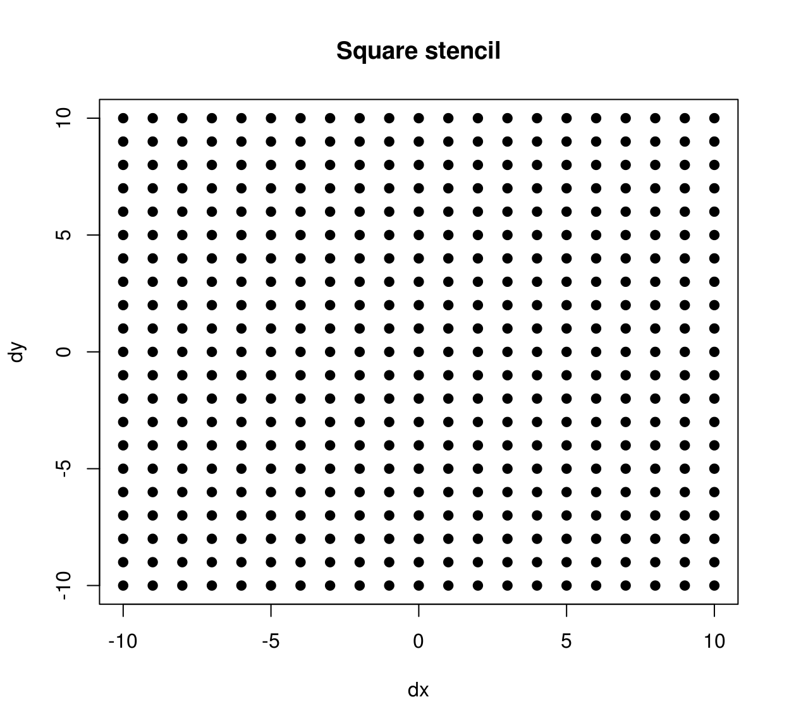
The stencil we’ve just defined contains all neighbours within a square patch of size 20x20. If we’d wanted a circular stencil we could have done the following:
circ.stencil <- subset(stencil,(dx^2 + dy^2) < 10^2)
plot(circ.stencil$dx,circ.stencil$dy,pch=19,xlab="dx",ylab="dy",main="Circular stencil")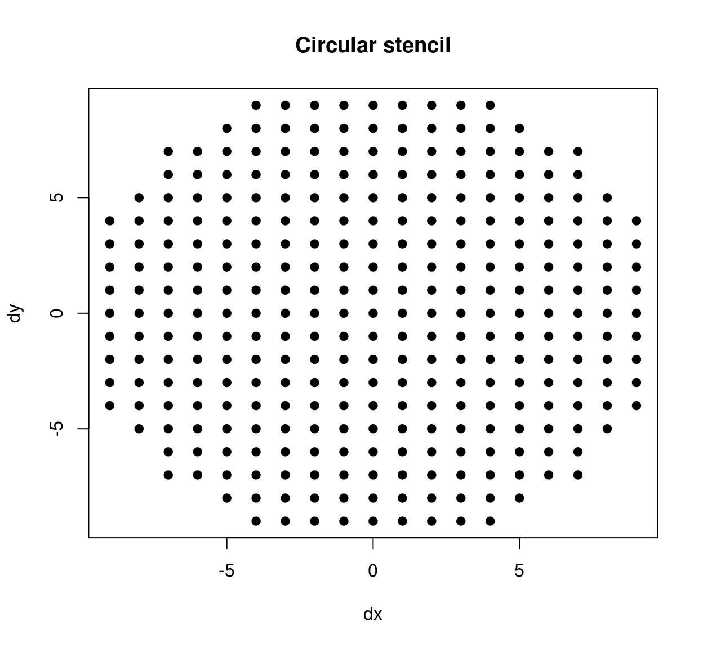
We extract pixel values just as we did before:
pos.x <- round(runif(5000,11,width(im)-10)) #Use more locations
pos.y <- round(runif(5000,11,height(im)-10))
pos <- cbind(pos.x,pos.y)
mat <- alply(pos,1,function(v) get.stencil(im.bw,stencil,x=v[1],y=v[2])) %>% do.call(rbind,.)
C <- cor(mat)Each coefficient in C corresponds to a pair of pixels that are a certain distance apart (as defined by our stencil). To compute the corresponding distances, we can use R’s built-in dist function:
Dx <- dist(stencil$dx) %>% as.matrix #Distance along the x axis
Dy <- dist(stencil$dy) %>% as.matrix #Distance along the y axis
df <- data.frame(dist.x = c(Dx),dist.y = c(Dy), cor = c(C))
head(df,3)## dist.x dist.y cor
## 1 0 0 1.0000000
## 2 1 0 0.9819809
## 3 2 0 0.9515344Plotting the results:
library(ggplot2)
ggplot(df,aes(dist.x,dist.y))+geom_point(aes(size=cor))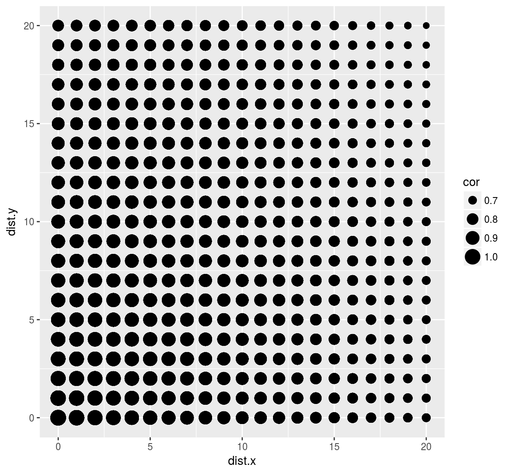
we see that correlation drops faster along the x axis than it does along the y axis. This visual impression can be confirmed by focusing on a subset of the data:
library(dplyr)##
## Attaching package: 'dplyr'## The following object is masked _by_ '.GlobalEnv':
##
## last## The following objects are masked from 'package:plyr':
##
## arrange, count, desc, failwith, id, mutate, rename, summarise,
## summarize## The following objects are masked from 'package:stats':
##
## filter, lag## The following objects are masked from 'package:base':
##
## intersect, setdiff, setequal, union#The following uses some dplyr shortcuts
suby <- subset(df,dist.x==0) %>% select(cor,dist.axis=dist.y) %>% mutate(label="Correlation along y")
subx <- subset(df,dist.y==0) %>% select(cor,dist.axis=dist.x) %>% mutate(label="Correlation along x")
rbind(subx,suby) %>% ggplot(aes(dist.axis,cor,col=label))+geom_point()+geom_smooth()+labs(x="Distance along axis (x or y), pix.",y="Correlation between values",col="")## `geom_smooth()` using method = 'gam'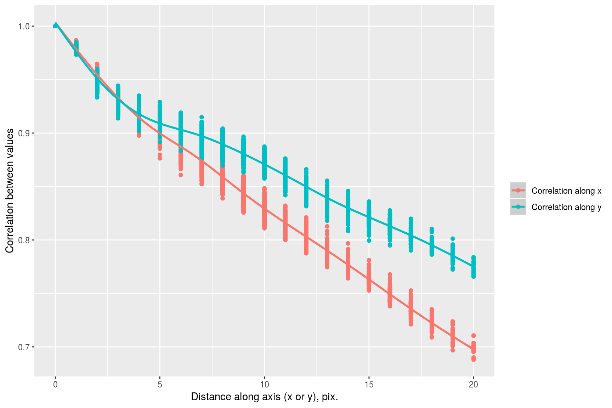
It’s interesting to look at the principal components of the image patches we extract. They describe the directions of greatest variance among the set of patches from this particular image (more interesting analyses use of course a whole set of images, not just the one).
Notice that the eigenspectrum of the covariance matrix falls off very rapidly:
Cm <- cov(mat)
evd <- eigen(Cm)
plot(sqrt(evd$val[1:30]),xlab="Eigenvalue index",ylab="Eigenvalue^1/2",type="o",pch=19)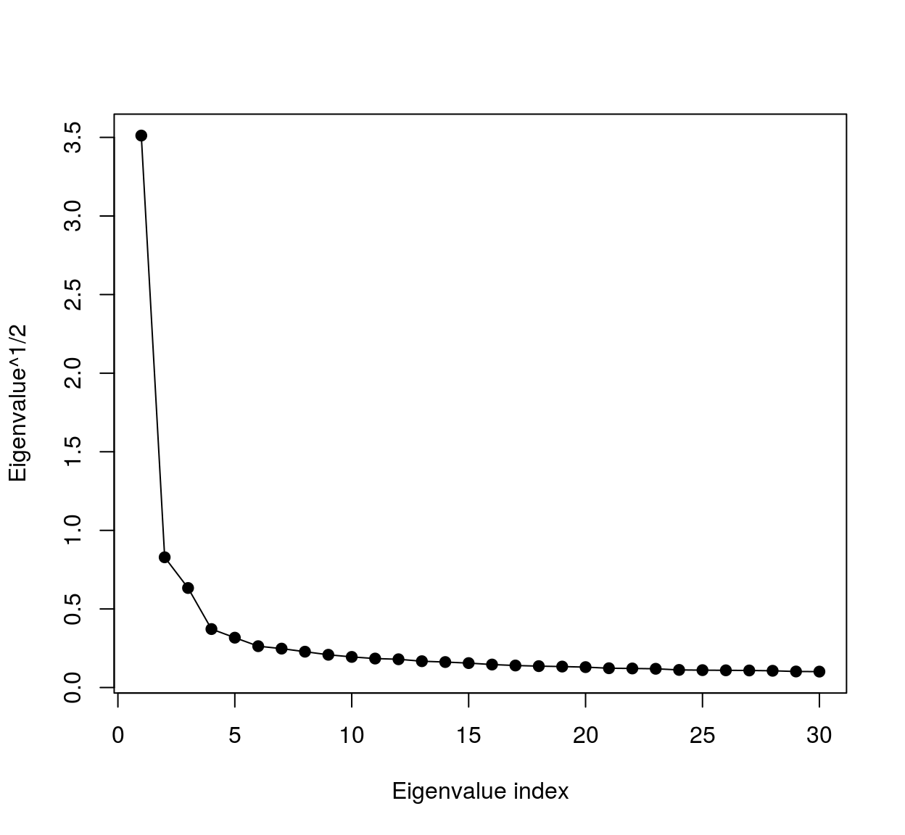
meaning most of the variance falls along a very low-dimensional subspace. We can visualise the eigenvalues as image patches, therefore images. To do so we could use ggplot:
vec <- evd$vec[,1] #First eigenvector (first principal component)
mutate(stencil,val=vec) %>% ggplot(aes(dx,dy)) +geom_raster(aes(fill=val)) + scale_y_reverse()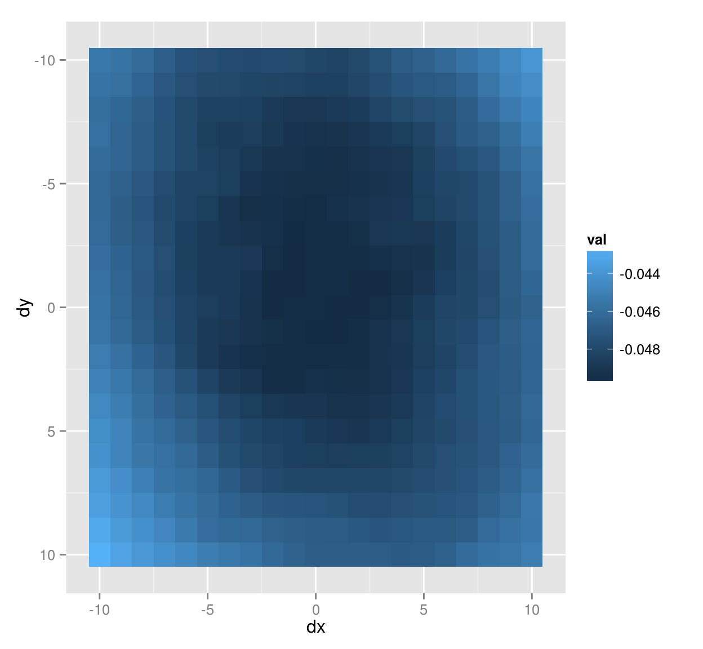
#Notice scale_y_reverse: the y arrow in image coordinates is reversed compared to the usual one The eigenvector has a classic center-surround structure.
We can also turn the eigenvector into a cimg object, using the as.cimg methods for data.frames. It expects a data.frame of the form (x,y,value), where x and y are valid image coordinates (meaning they have to be between 1 and whatever the width or height of the image is). First we center the stencil at a location where we’ll get correct image coordinates, then we add pixel value information, then we convert:
make.im <- function(v) center.stencil(stencil,x=11,y=11) %>% mutate(v=v) %>% as.cimg("v",dims=c(21,21,1,1))
make.im(vec) %>% plot #vec is now a cimg object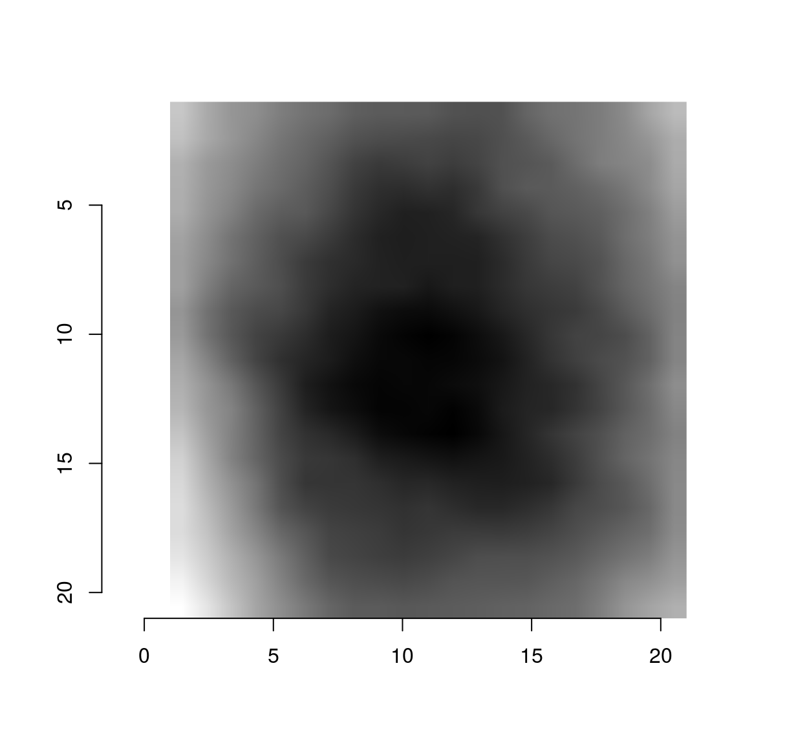
We can use that trick to plot the first 5 principal components as a single image:
scaled.pc <- function(ind) scale(evd$vec[,ind]) %>% make.im
llply(1:5,scaled.pc) %>% imappend("x") %>% plot(main="5 principal components") 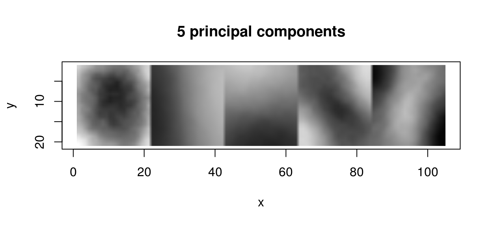
The first principal components in images usual have a center-surround or gradient structure. What that tells us is the same thing we could already tell from the correlogram: images are spatially smooth, so that the way they can vary locally is pretty constrained.
Whitening is signal processing jargon for making a signal uncorrelated. As we can see from the principal components (which are a set of basis functions that decorrelates the image locally), whitening is going to be about taking local differences. Many filters do just that: CImg implements a filter called deriche which essentially takes first and second-order differences. To examine what the filter does we can begin with its impulse response. The impulse response is the filter output when the input is dirac pulse, which we can generate using imdirac:
impulse <- imdirac(c(50,50,1,1),25,25)
plot(impulse,main="Dirac image")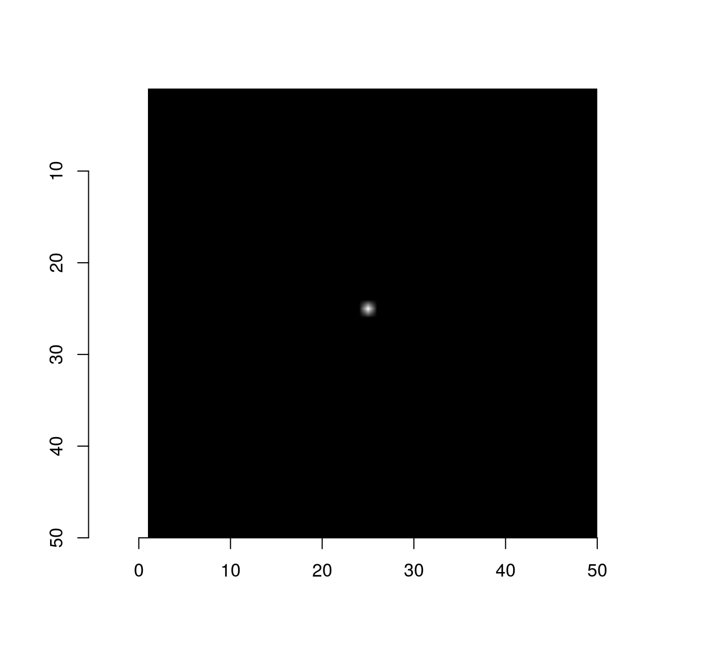
isoblur(impulse,sigma=2) %>% plot(main="Impulse response of the blur filter")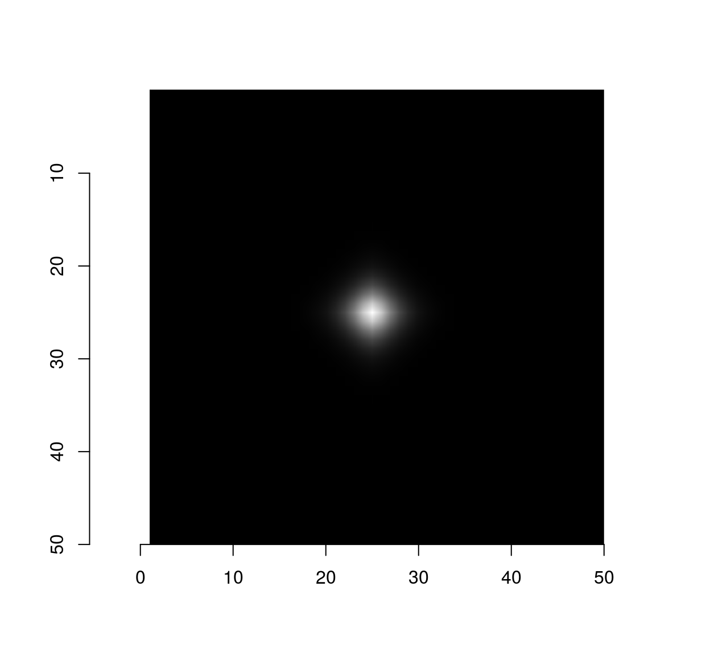
deriche(impulse,sigma=2,order=1,axis="x") %>% plot(main="Impulse response of the first-order\n Deriche filter along x")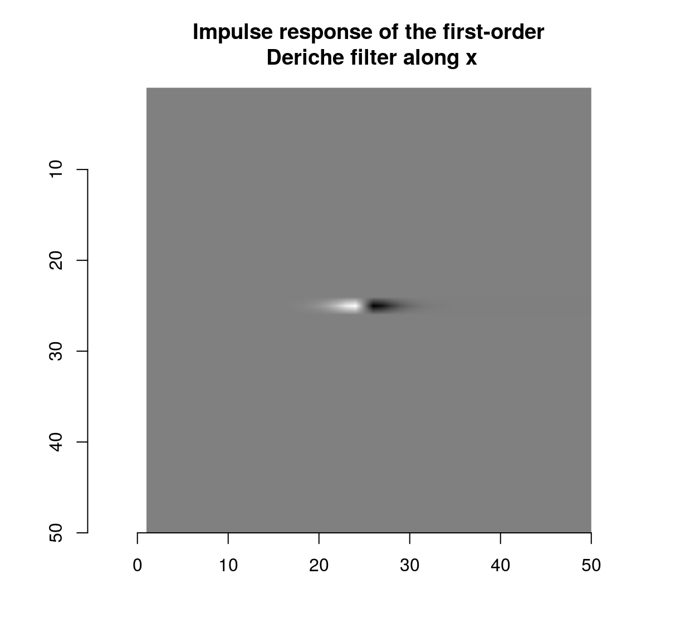
deriche(impulse,sigma=2,order=1,axis="y") %>% plot(main="Impulse response of the first-order\n Deriche filter along y")which shows that the blur filter performs local averaging, and the first-order Deriche filter performs local differentiation. The scale can be set using the “sigma” parameter:
deriche(impulse,sigma=5,order=1,axis="x") %>% plot(main="Impulse response of the first-order\n Deriche filter (sigma = 5)")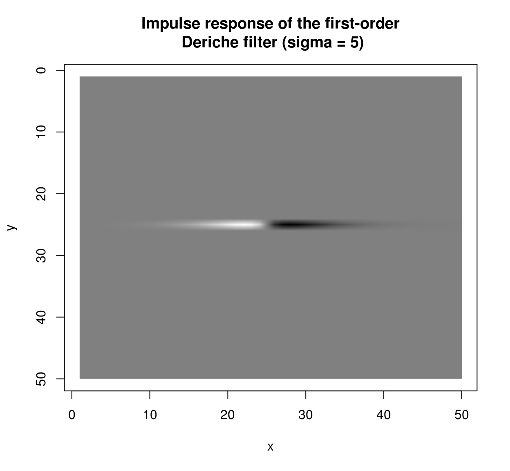
Taking finite differences usually has the effect of partially decorrelating the image. To illustrate this we need a function that encapsulates what we did above and computes the correlation along the x and y axes.
correlogram <- function(im,pos)
{
#A cross-shaped stencil
stencil <- data.frame(dx=c(seq(-10,10,1),rep(0,11)),dy=c(rep(0,11),seq(-10,10,1)))
mat <- alply(pos,1,function(v) get.stencil(im,stencil,x=v[1],y=v[2])) %>% do.call(rbind,.)
Dx <- dist(stencil$dx) %>% as.matrix #Distance along the x axis
Dy <- dist(stencil$dy) %>% as.matrix #Distance along the y axis
df <- data.frame(dist.x = c(Dx),dist.y = c(Dy), cor = c(cor(mat)))
suby <- subset(df,dist.x==0) %>% select(cor,dist.axis=dist.y) %>% mutate(label="Correlation along y")
subx <- subset(df,dist.y==0) %>% select(cor,dist.axis=dist.x) %>% mutate(label="Correlation along x")
rbind(subx,suby) %>% ggplot(aes(dist.axis,cor,col=label))+geom_point()+labs(x="Distance along axis (x or y), pix.",y="Correlation between values",col="")+stat_summary(fun.y="mean",geom="line")
}As a sanity check we can apply the new function to filtered noise:
#A white noise image
wn <- array(rnorm(prod(dim(im.bw))),dim(im.bw)) %>% cimg
#Filtered noise, similar to an MA process
fn <- isoblur(wn,2)
plot(fn)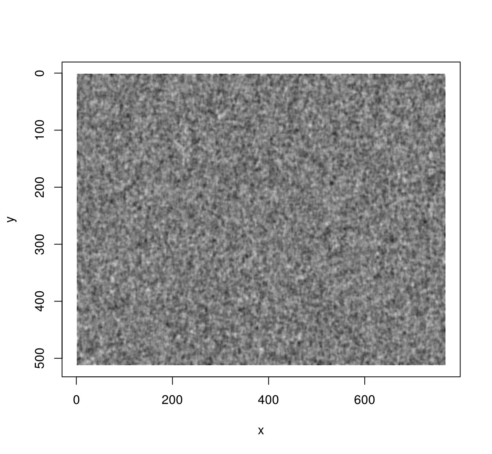
Since the blur filter used a standard deviation of 2 pixels, the correlation should have mostly disappeared by a distance of 6 pixels:
correlogram(fn,pos)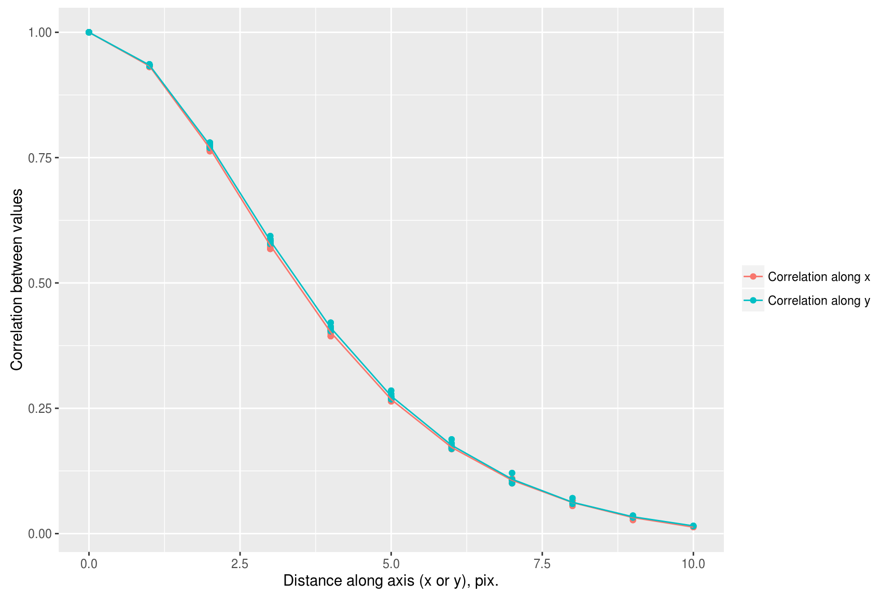